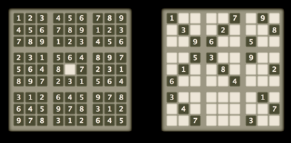

משחק הסודוקו זוכה לפופולריות הולכת וגוברת בשנים האחרונות. בתוך רשת של 9 × 9 תאים יש לרשום את המספרים 1 עד 9 באופן שבכל שורה ובכל עמודה תופיע כל ספרה פעם אחת בלבד. ואם זה לא מספיק, גם בכל מקבץ של 3 × 3 תאים, חייבת כל ספרה להופיע פעם אחת בלבד.
בתשבץ סודוקו טיפוסי, חלק מהמספרים כבר מודפסים בתשבץ. פתרון התשבץ כרוך במציאת מיקום מתאים לספרות בתאים הריקים. דרגת הקושי נעה בין ילדותית ועד קשה כמו הגיהינום.
|  |
תשבץ הסודוקו הקל ביותר (ללא ספק) והקשה ביותר (לפי השמועה).